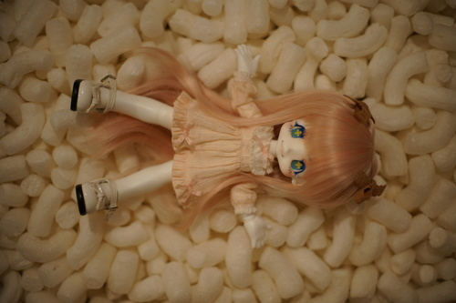

He's 12! 12 smoochies for my big birthday boy!

Here's what you've all been waiting for! My lack of self control in the presence of good deals! Thank you all for witnessing my downfall.
WHY must i find all the good pastels on earth for nearly nothing after paying $25 for 6 sticks of BLICK brand. This set is fairly well used. There is at least a sliver of each color, but I can't leave rembrandts behind. Luckily the smallest sliver was just brown and now I have tons of those.
I picked up this CD because the name sounded familiar but I couldn't quite place it. I googled their name and I absolutely listened to two of the songs on this album on repeat in middle school. I can remember the video for fearless very well.
Kokuyo made this?
i honestly only wanted the brown thread but i guess i'll just be covered for thread for a long time instead. i really do need a lot more colors but idk if i wanted to use up THIS much space for thread spools
if i buy any of these pen junk bags there's something good in there right?
The copic made one bag an instant buy, while the other bag had a frixion. I was really curious if frixion can be used for sewing purposes since it's heat sensitive and water based ink. I'll write a little lower how they performed!
The prismacolor and w&n markers are in incredibly bad condition. They look like a 5 year old used them. I'll keep them around for a bit to try experimenting with the bodies, but I don't think any of these are technically refillable and the nibs looked awful to start with. Copic really has that over most marker brands.
Some of the other pens are nice enough not to toss into the wild at work but I might just leave them in my pocket at work (and lose them). The fate of the mass of childrens markers? My coworker has a 3 and 5 year old so I'm giving them to her. I'm not sure if i need to keep the watercolors or not. half are metallic and some neon so I'll try them first.
I made marks from the pens from blog post 114 and the 3 frixion pens on a scrap of the checkerboard fabric. I couldn't get the white one to mark much at all though. I then took my iron and pressed the bottom half of the lines.
The two heat erasable pens disappeared very well. I could still see just hints of pink and purple from the frixion pens but they did decently well. The pink frixion gel pen left a lighter mark over the black blocks though.
The next test was to wash the scrap. The colored marks appeared to fully disappear from this as well as the lighter mark from the frixion gel. I can't see any marks at all. Theoretically, acid should also cause the ink to "disappear". I haven't tested it yet but a vinegar bath should cause the same reaction as heat.
My favorite to use were the frixion markers! Gel pens are better performing on smooth surfaces but markers can handle it.
I've read that heat erasable ink shouldn't be used on heirloom sewing because the marks will turn colors over many years. Keep that in mind if you plan on using these for a smocking project.
My bestie's Dollshe Grant Phillipe arrived yesterday as well! He was just short of a 3 year wait. I'm so relieved this is finally over for her. Welcome, Nameless Boy! Also don't buy from dollshe.
The DoA mods posted saying the Dollshe waiting room thread was only for people with dolls on order from dollshe and that they would be pruning the thread and passing out disciplinary action.
12 posts were deleted, with 2 of mine included due to continuity issues. Jokes on them, I was waiting for a dollshe order despite it not being my order. Now that the doll has arrived, I suppose I will have to make my exit.
I think this is a very strange choice. Are we just supposed to ignore this situation? Do they want it discussed in the large and small dolls discussion threads? I know that DoA is very anti-drama, but it's better for a mass scam to be extremely well known.
If you've made it this far down, you get to know a secret!
I've had discussions with pompon about this and we have decided that I have not bought a doll. I have merely completed a doll I bought 13 years ago.
I want you all to know I have not been nearly as panicked about this transaction as I was Praline's. In fact, this transaction was extremely fast and took only 6 days between my first inquiry resin match message and the body's arrival. Literally the perfect doll transaction.